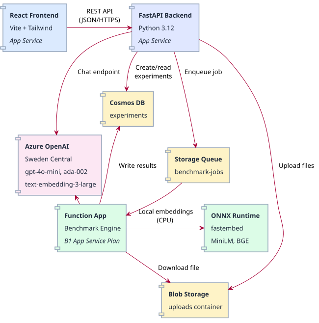

Embedding Model Benchmarking Platform
Cloud Computing Project
Janek • March 2026
Key question: Are free open-source models good enough, or do you need to pay for API-based ones?

| Service | Resource | Purpose |
|---|---|---|
| App Service | embed-match-web | FastAPI backend (Python 3.12) |
| App Service | embed-match-frontend | React SPA (Node 22) |
| Function App | embed-benchmark-fn | Queue-triggered benchmark engine |
| Storage Account | embedstorage20147 | Blob uploads + job queue |
| Cosmos DB | embed-db | Experiment results (NoSQL) |
| Azure OpenAI | embed-openai-sweden | GPT-4o-mini, ada-002, 3-large |
Region: Switzerland North (Cosmos, Storage, App Services) • Sweden Central (OpenAI)
POST /uploads/POST /experiments/GET /experiments/{id}| Model | Type | Dims | Cost/M tok | MTEB |
|---|---|---|---|---|
| Ada 002 | API | 1536 | $0.10 | 61.0 |
| Text Embedding 3 Large | API | 3072 | $0.13 | 64.6 |
| MiniLM-L6-v2 | Open Source | 384 | Free | 56.3 |
| BGE Small EN v1.5 | Open Source | 384 | Free | 62.2 |
| BGE Base EN v1.5 | Open Source | 768 | Free | 63.6 |
Open-source models run locally on the Function App via fastembed (ONNX Runtime) — no external API calls, zero cost per token
benchmark-jobs-poison| Pipeline | Trigger | Method |
|---|---|---|
| Backend | backend/** | Kudu (Oryx) |
| Frontend | frontend/** | OneDeploy |
| Function | functions/** | Kudu (bundled) |
Push to main → GitHub Actions → automatic deploy
Each also has workflow_dispatch for manual triggers
pip install / npm install from the zip during deploybackend/ with requirements.txtpip installuvicorn src.main:apppnpm build on CI runnerdist/ folder (static HTML/JS/CSS)npx serve . -spip install -t fn_pkgs on CI runner (bundles 285 MB of packages).python_packages/lib/site-packages/pip install) unreliable on App Service Plans.python_packages/pip install -t then zips everythingModel weights (~80-420 MB) are downloaded on first invocation and cached at /home/hf_cache
Database: embedbench | Container: experiments | Partition key: /id
{
"id": "bdc086b0-...",
"status": "completed", // pending -> running -> completed/failed
"blob_name": "dataset.csv",
"selected_models": ["text-embedding-ada-002", "BAAI/bge-small-en-v1.5"],
"results": [
{ "model_name": "...", "retrieval_score": 0.80, "latency_ms": 6.2, ... },
{ "model_name": "...", "retrieval_score": 0.78, "latency_ms": 252, ... }
]
}Why Cosmos? Flexible schema, global distribution ready, serverless pricing tier available
| Current (Student) | With Full Subscription |
|---|---|
| Publish profiles (shared credentials) | Service Principal + OIDC (no secrets to rotate) |
| Connection strings with account keys | Managed Identity + RBAC roles (zero credentials) |
| B1 App Service Plan (~12/mo) | Consumption Plan (pay per execution, ~0) |
| OpenAI in Sweden, resources in Switzerland | All resources co-located in same region |
| IP whitelisting only | VNet + Private Endpoints + Azure AD auth |
| No GPU compute (CPU inference ~250ms) | GPU-enabled Function App or AKS (~5ms) |
| Model | Type | Score | Latency | Cost/M |
|---|---|---|---|---|
| Ada 002 | API | 0.80 | 6 ms | $0.10 |
| MiniLM-L6-v2 | Open Source | 0.78 | 252 ms | Free |
Thank you!